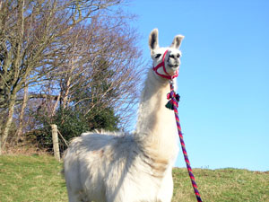

Llamas are members of the Camelid (camel) family, and are the largest of the South American Camelids that originate from the high Andes.
They were domesticated 4000 - 5000 years ago by the Incas and are among the oldest domesticated animals in the world.
Llamas were used by the Incas as beasts of burden as well as for meat and hide - while their smaller cousins, alpacas, were bred for their fine fibre (fleece).
The South American camelids, which include wild vicunas and guanacos as well as the domesticated llamas and alpacas, are distant cousins of the camels of Asia and the Middle East.
The South Americans produced at least two breeds of llama - the short haired Ccara for work, and the long haired Lanuda which was used as the main source of llama fibre for textiles. Unfortunately the early Northern American breeders mixed these up to produce a variety of cross-breeds that were not particularly well suited to either purpose. Thus nowadays there are no distinct breeds of llama, but modern breeders have developed two defined types similar to the original breeds.
Mac on the left is a long-haired llama. His fibre extends right down his legs, while Blitzen on the right is short-haired and has no fibre on his legs.
Adult llamas stand at about 4 foot at the shoulder, weigh 120-200 kg and can carry approximately 20-25% of their bodyweight.
They have a lifespan of 15-25 years and come in a wide range of colours and markings – black, white, grey and all shades of brown.
Unlike alpacas most llamas have mixed colours - and they even come spotted.
They are similar to cashmere goats in that they have a double coat.
The upper layer is known as guard hair, which is course and aids in air circulation as well as acting as a water-repelling rain coat, while the underneath consists of soft down hair which keeps the animal warm.
Llamas should have fantastic long and pointed banana shaped ears like Golly here (although not all do), and big beautiful eyes with thick lashes
Llamas are herbivores and are “modified ruminants” - they have a three-chambered stomach and chew the cud.
(True ruminants like cows and sheep have a four-chambered stomach.)
As well as grazing, llamas like to browse in hedgerows (brambles are a particular delicacy!) and are very efficient at converting poor quality forage into protein.
Average stocking rates are 4 llamas/acre.
Although they are very hardy animals, being adapted to high altitudes and extremes of temperature, they should be provided with some type of shelter from the heat as well as the cold.
They are herd animals and should not be kept on their own.
Although they prefer the company of other llamas they will often live quite happily with animals such as horses, donkeys, goats and sheep.
Llamas are alert, quick to learn and extremely nosey - our llamas even stare into the farmhouse windows to see what’s going on!
They are strong, stoic and extremely gentle - and they have no horns, hooves or claws to cause injury.
They do not bite as, like sheep and goats, they do not have any upper incisors, just a hard pad.
Like camels, llamas have two toes on each foot with a leathery pad underneath which they can move to maintain grip on steep or rocky terrain.
Thus they are very sure footed, and as they walk on pads rather than hooves they do not damage the environment.
They all have very individual characters and their docile temperaments have a real calming effect, making them ideal walking companions.
Llamas have been in the UK for many years now. As they make excellent walking companions many are being used in llama trekking centres around the country such as Peak Hill Llamas. Some llamas are kept as pets or as companions to animals such as horses or goats, and others are kept for their high quality fibre (fleece). This fibre, although not generally as fine as that of alpacas, can be used for hand spinning, felting, and for fibre used in crafts. It is lightweight and warm, does not shrink and is naturally hypoallergenic (it has no lanolin).
Llamas are increasingly being used by farmers for guarding sheep or poultry as they have a natural guarding instinct and will chase off predators such as dogs or foxes. A Warwickshire farmer who had been suffering from frequent dog attacks on his 250 sheep reported that these attacks had completely stopped after the introduction of a guard llama. Rufus, pictured right, takes sheep-watching very seriously!
In the USA llama cart driving is a popular activity, and it is hoped that this will also take off in the UK. Currently in England there is just one lady that we know of, Terry Crowfoot, who has trained one of her llamas to pull a cart. Terry is keen to get other llama owners to do the same. At Peak Hill Llamas we have a young llama called Ollie who we hope will make a good cart llama, and with help and encouragement from Terry, have just begun his training.
Llama manure makes an excellent fertiliser. The pellets - sometimes known as “llama beans” are odourless. high in nitrogen, and can be put straight onto gardens without the need for composting - with no danger of burning plants.
Do they spit? Do they bite? Do they kick ? Where did you get them ? What are you going to do with them?!!
I found this on an American website as a “question” that a llama owner is constantly being asked - and when we are out and about with our llamas we are often stopped by passers by and asked exactly the same thing!
The most common question that we get asked is "Do they spit?" The answer to this is yes they do spit - but usually only at each other. Spitting is a natural form of defence and used to establish and uphold social order within the herd, as well as to settle disputes over food. Most disputes are resolved at the mere threat of a spit. Llamas do not normally spit at humans unless they are provoked.